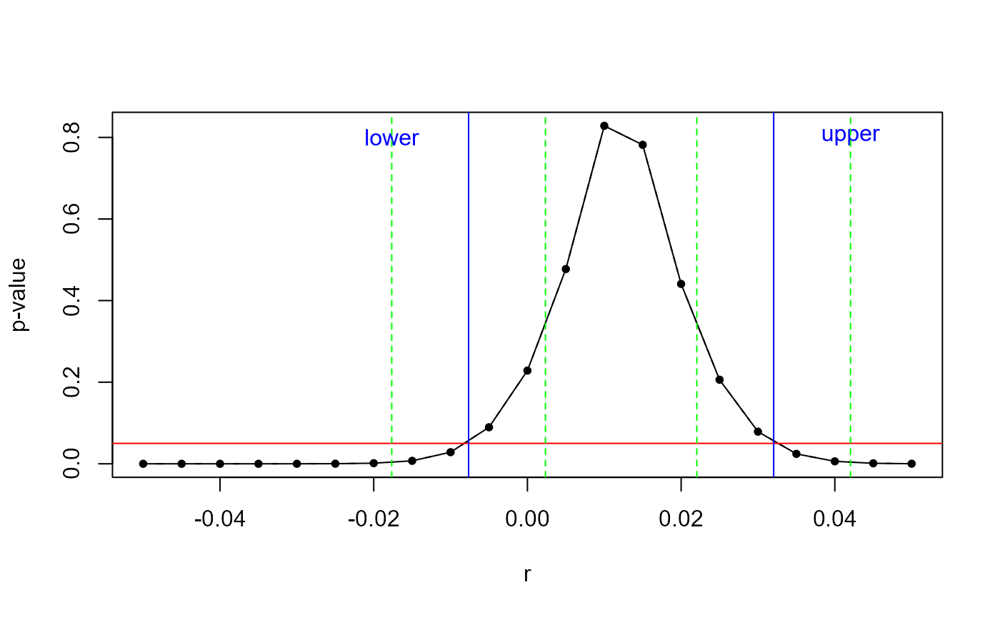

Wild Cluster Bootstrap 101
We are interested in testing a linear hypothesis \(H_0: \beta_{j} = 0\) against \(H_1: \beta_{j} \neq 0\)
for a linear model of interest
\[\begin{align} y &= X \beta + u \\ &= \begin{bmatrix} y_{1} \\ y_{2} \\ ...\\ y_{G} \end{bmatrix} = \begin{bmatrix} X_{1} \\ X_{2} \\ ...\\ X_{G} \end{bmatrix} \beta + \begin{bmatrix} u_{1} \\ u_{2} \\ ...\\ u_{G} \end{bmatrix}, \end{align}\]
with \(E(u|X) = 0\), where group \(g\) contains \(N_{g}\) observations so that \(N = \sum_{g = 1}^{G} N_{g}\). The regression residuals \(u\) are allowed to be correlated within clusters, but are assumed to be uncorrelated across clusters. In consequence, the models’ covariance matrix is block diagonal. For each cluster, we denote \(E(u_{g} u_{g}') =\Sigma_{g}\) and \(E(u u') =\Sigma\).
A generic wild bootstrap test then proceeds in the following steps:
- Step 1: Either
- … regress \(y\) on \(X\); obtain point estimates \(\hat{\beta}\) and estimated residuals \(\hat{u}\); This type of bootstrap is known as the “WCU” (wild cluster unrestricted)
- … or regress \(Y\) on \(X\) imposing the null (via restricted least squares); obtain point estimates \(\tilde{\beta}\) and estimated residuals \(\tilde{u}\). This type of bootstrap is known as the “WCR” (wild cluster restricted)
- to unify notation, we will denote \(\ddot{\beta}\), with \(\ddot{\beta} = \hat{\beta}\) for the WCU and \(\ddot{\beta} = \tilde{\beta}\) for the WCR
- Step 2:
- calculate the (cluster) robust t-statistic for the null hypothesis of interest, i.e. \[ t_{j} = \frac{\hat{\beta_{j}}}{\sqrt{\hat{\Sigma}_{jj,x}}} \] The subscript \(x\) for the variance-covariance estimate \(\hat{\Sigma}_{jj,x}\) denotes the type \(x\) of the employed cluster robust variance estimator, and the \(jj\) subscribt selects the jth column and row of the variance covariance matrix.
- Step 3:
- For \(b = 1, ..., B\) bootstrap iterations, create
- a set of bootstrap error terms \(v_{b}^{*} \in \mathbb{R}^{G}\)
- a new bootstrap sample \(y_{b}^{*} = X \ddot{\beta} + f_{y}(\hat{u}) \times v_{b}^{*}\), where for each observation from the same cluster g, the transformed predicted error \(f_{y}(\hat{u})\) is multiplied with the same weight \(v_{b,g}^{*}\)
- a bootstrapped t-statistic \[ t_{j,b}^{*} = \frac{\hat{\beta_{j,b}^{*}} - \ddot{\beta_{j}}}{\sqrt{\hat{\Sigma}_{jj,x,b}^{*}}} \] where \(\hat{\beta}_{j,b}^{*}\) is the jth element of the OLS estimate of \(y_{b}^{*}\) on \(X\) and \(\hat{\Sigma}_{jj, x, b}^{*}\) the associated (cluster) robust variance-covariance estimate of type \(x\)
- For \(b = 1, ..., B\) bootstrap iterations, create
- Step 4:
- based on all \(B\) bootstrapped t-statistics, calculate a bootstrap p-value as
\[\begin{equation} \text{right tailed: } \hat{P}_{R}^{*} = \frac{1}{B} \sum_{b = 1}^{B} 1(t^{*}_{j,b} > t_j) \end{equation}\]
\[\begin{equation} \text{two-tailed: } \hat{P}_{S}^{*} = \frac{1}{B} \sum_{b = 1}^{B} 1(|t^{*}_{j,b}| > |t_j|) \end{equation}\]
\[\begin{equation} \text{equal-tailed: } \hat{P}_{ET}^{*} = 2 min(\hat{P}_{L}^{*}, \hat{P}_{R}^{*}). \end{equation}\]
Multiple Variants of the Wild Cluster Bootstrap
The above algorithm leads to several variants of the wild cluster bootstrap: first, the bootstrap variants may differ in the choice of the variance-covariance estimator \(\Sigma_{x}\). Second, they may differ in the functional transformation of the estimated residuals \(f(\hat{u})\). Finally, the choice of imposing or not imposing the null on the bootstrap data generating process, as well as the choice of bootstrap weights lead to different bootstrap variants.
Based on recent work by J. G. MacKinnon et al. (2022), we will put emphasis on the choice of the variance-covariance estimator \(\Sigma_{x}\) and how the residuals \(f(\hat{u})\) are transformed.
For reasons of computational feasibility, J. G. MacKinnon et al. (2022) focus on CRV1 and CRV3 covariance matrix estimators.
Both the CRV1 and CRV3 variance covariance estimators can be written as
\[\begin{equation} CRV: \hat{\Sigma}_{x} = (X'X)^{-1} (\sum_{g=1}^{G} X_{g}' f_{x}(\hat{u}_{g}) f_{x}(\hat{u}_{g})' X_{g} ) (X'X)^{-1}. \end{equation}\]
For the CRV1 estimator, the function \(f_{1}(\hat{u}_{g})'\) is defined as
\[ f_{1}(\hat{u}_{g})' = \sqrt{\frac{G}{G-1} \frac{N-1}{N-k}} \times \hat{u}. \]
For the CRV3 estimator, the equivalent function is defined as
\[ f_{3}(\hat{u}_{g})' = \sqrt{\frac{G}{G-1}} \times M_{gg}^{-1} \hat{u}_{g} \]
where \(M_{gg} = I_{N_g} - H_g\), \(H_g = X_g (X'X)^{-1} X_g'\), and \(I_{N_g}\) is the diagonal matrix for all observations in cluster \(g\).
In consequence, J. G. MacKinnon et al. (2022) define four distinct bootstrap variants that differ in a) the function \(f_{y}\) used when creating the bootstrap samples - i.e. whether the “score” is imposed on the bootstrap data generating process or not - and b) the the type of variance-covariance matrix estimator, which can either be the classical CRV1 or the CRV3 estimator.
| Bootstrap Type | VCOV | Score-on-dgp | |
|---|---|---|---|
| ‘Classic’: ‘C’(‘11’) | CRV1 | \(f_{1}\) | |
| ‘Variance’: ‘V’(‘13’) | CRV3 | \(f_{1}\) | |
| ‘Score’: ‘S’(‘31’) | CRV1 | \(f_{3}\) | |
| ‘Both’: ‘B’(‘33’) | CRV3 | \(f_{3}\) |
All four variants of the wild cluster bootstrap are supported via fwildclusterboot, either imposing the null hypothesis on the bootstrap data generating process (WCR) or not (WCU).
Multi-Way Clustering
A further generalisation of the algorithm described above is the case of multi-way clustering. For multi-way clustering over two sets of clusters \(G\) and \(H\), the variance-covariance matrix is computed as
\[\begin{equation} \hat{\Sigma} = m_{G} \hat{\Sigma}_{G} + m_{H} \hat{\Sigma}_{H} - m_{GH} \hat{\Sigma}_{GH} \end{equation}\]
where the number of clusters in \(m_{GH}\) is the number of non-empty intersections in clusters \(G\) and \(H\) (and the variance covariance matrix estimator \(\hat{\Sigma}_{i}\) can be either CRV1 or CRV3 for all \(i \in \{G, H, GH \}\)). Note that it may occur that the resulting variance-covariance matrix is not positive definite - in this case, bootstrap estimates are discarded.
An important choice for multi-way clustering is the level from which the bootstrap weights are drawn: Should the bootstrap weights be drawn from cluster \(G\), cluster \(H\), or even the intersection of the two? The level of clustering from which the bootstrap weights are drawn is usually referred to as the “bootcluster”. By default, boottest and fwildclusterboot select the largest of the three clustering levels as the bootcluster, although this is not necessarily recommended (see Roodman et al. (2019)).
For applications with few treated clusters - for example, difference-in-differences models with few treated states - MacKinnon and Webb (2018) suggest using a ‘subcluster’ as the level of sampling for the bootstrap weights. A subcluster is a partition of a cluster, i.e. cities in a given state.
The Non-Clustered Wild Bootstrap
For the non-clustered (“heteroskedastic”) wild bootstrap, each observation is multiplied by its own ‘custom’ weight, and the cluster-robust variance-covariance matrices are replaced by heteroskedastic variance-covariance matrices. This results in the following functional specifications:
\[\begin{equation} HC1: f(\hat{u}) = \sqrt{\frac{n}{n-k}} \hat{u} \end{equation}\]
\[\begin{equation} HC2: f(\hat{u}) = \frac{\hat{u}}{(1-h_i)^{1/2}}; \end{equation}\]
\[\begin{equation} HC3: f(\hat{u}) = \frac{\hat{u}}{(1-h_i)} \end{equation}\]
where \(h_i\) is the i-th diagonal element of the “hat-matrix” \(P_x = X(X'X)^{-1}X'\).
At the moment, fwildclusterboot only supports the ‘11’, ‘21’ and ‘31’ combinations of the wild robust bootstrap, i.e. one can choose to apply the ‘HC1’, ‘HC2’ or ‘HC3’ correction on the bootstrap data generating process, but the bootstrap variance-covariance matrices are always calculated via ‘HC1’.
Different bootstrap weights
One last degree of freedom when conducting inference via a wild bootstrap is the type of bootstrap weights, i.e. the choice of probability distribution from which the weights are drawn. fwildclusterboot offers support for four distinct weights \(v_{b}^{*}\):
- Rademacher weights take values \(1\) and \(-1\) with equal probability
- Mammen weights take values values \(1-\psi\) with probability \(\psi / \sqrt(5)\) and \(\psi\) otherwise, with \(\psi = (1+\sqrt(5))/2\)
- Normal weights draw from the standard normal distribution
- Webb weights draw from a six-point distribution, each with probability \(1/6\). Possible values are \(+/-1.5, +/-1, +/-0.5\).
For Rademacher and Mammen weights, only \(2^G\) unique combinations of draws exist. If G is small - i.e. smaller than 12 - it is therefore often recommended to use Webb weights with \(6^G\) unique possible draws (see Webb (2013)).
Wild Bootstrap Confidence Intervals
In theory, multiple ways to calculate wild (cluster) bootstrapped confidence intervals exists (J. G. MacKinnon, Nielsen, and Webb 2022).
Based on simulation results in MacKinnon (2015) and higher order asymptotic theory in Djogbenou, MacKinnon, and Nielsen (2019), fwildclusterboot computes confidence intervals by test inversion. While inverting bootstrap tests is computationally more demanding, in the case of the wild cluster bootstrap, the procedure can be massively accelerated by pre-computing multiple objects that are constant across all iterations of the inversion algorithm. Details on how this acceleration is achieved in fwildclusterboot are presented in the appendix (which is to be added. If you are curious, you can email Alex, and he’ll share his notes). In the following section, for illustrative purposes, we will demonstrate how to invert a simple t-test for a regression model (vs a bootstrap test inversion).
Example: How to compute a CI by test inversion
Based on the definition of the p-value, we can define a confidence interval at significance level \(\alpha\) as
\[ C = \{\theta \in \Theta: p(\theta) \geq \alpha \}. \] In other words: the confidence interval is the set of all values \(\theta \in \Theta\) with p-value larger than the chosen significance level \(\alpha\).
All of this implies that if we have a function that calculates p-values for different values of \(\theta\), \(p(\theta)\), to obtain a confidence interval, we simply have to collect all values \(\theta\) for which \(p(\theta) > \alpha\). Or, in other words, we need to invert \(p(\theta)\).
We will illustrate all of this based on a simple linear regression model.
The data generating process is
\[ Y = \beta_0 + \beta_1 X + u \]
with \(E[u|X] = 0\), and we are interested in testing the null hypothesis
\[ H_0: \beta_1 = 0 \textit{ vs } H_1: \beta_1 \neq 0. \]
We start with simulating the data:
set.seed(21348534)
N <- 10000
X <- rnorm(N)
y <- 1 + 0.01 * X + rnorm(N)
df <- data.frame(X = X, y = y)
fit <- (lm(y ~ 1 + X, data = df))The estimated confidence interval of the regression model is
confint(fit)
#> 2.5 % 97.5 %
#> (Intercept) 0.964052355 1.00325628
#> X -0.007654199 0.03204427Note that this confidence interval is build on estimated standard errors.
This means that in order to calculate standard errors, confint() computes a standard error and multiplies it with a critical value.
To compute a confidence without estimating standard errors, we first need to define a function that calculates p-values for different values of \(\beta\) given the model and data. To do so, we will simply create a function that will allow us to test hypotheses of the form
\[ H_0: \beta_1 - r = 0 \textit{ vs } H_1: \beta_1 -r \neq 0. \]
for different values of \(r\), which is of course equivalent to testing
\[ H_0: \beta_1 = r \textit{ vs } H_1: \beta_1 \neq r. \]
Tests of such a form are implemented in the car package, via the linearHypothesis function, and we create a small wrapper function, p_val(y, X, r) around car::linearHypothesis:
p_val <- function(y, X, r){
res <- lm(y ~ 1 + X)
p_val <- car::linearHypothesis(model = res, hypothesis.matrix = c(0,1), rhs = r)$`Pr(>F)`[2]
p_val
}As can be seen in the plot below, for different values of \(r\), p_val() returns a range of p-values:
p_val_r <- unlist(lapply(seq(-0.05, 0.05, 0.005), function(i) p_val(y = y, X = X, r = i)))
p_val_df <- data.frame(r = seq(-0.05, 0.05, 0.005), p_val_r = p_val_r)
plot(x = p_val_df$r, y = p_val_df$p_val_r,type = "b", pch = 20, lty = 2, xlab = "r", ylab = "p-value")
lines(p_val_df$r, p_val_df$p_val_r, type = "l", lty = 1)
abline(h = 0.05, col = "red")
abline(v = confint(fit)["X", ][1], col = "blue")
text(x = confint(fit)["X", ][1] - 0.01, y = 0.8, "lower", srt=0.2, col = "blue")
abline(v = confint(fit)["X", ][2], col = "blue")
text(x = confint(fit)["X", ][2] + 0.01, y = 0.8, "upper", srt=0.2, col = "blue")
abline(v = confint(fit)["X", ][1] - 0.01, col = "green", lty = 2)
abline(v = confint(fit)["X", ][1] + 0.01, col = "green", lty = 2)
abline(v = confint(fit)["X", ][2] - 0.01, col = "green", lty = 2)
abline(v = confint(fit)["X", ][2] + 0.01, col = "green", lty = 2)
The p-value peaks for the “true” null hypothesis \(\beta_1 = r = 0.01\) and decreases when moving further away from the true value.
The two points where the red line crosses with the black line - marked by a blue line - are the confidence interval for our hypothesis test of interest! (Note that this plot is very similar to the output of plot.boottest()).
In consequence, our goal is to find the intersection of the blue, red, and black lines.
To do so, we need to find two starting values for the line search. Those are marked as green. In practice, boottest() needs to do some work to find them, but here we will skip this step.
We will start from the empirical confidence interval calculated by confint():
confint(fit)
#> 2.5 % 97.5 %
#> (Intercept) 0.964052355 1.00325628
#> X -0.007654199 0.03204427We create two sets of starting values by adding a value \(\epsilon \neq 0\) to the confidence boundaries of the confidence set obtained by confint():
epsilon <- 0.01
startset1 <- confint(fit)["X",][1] + c(-epsilon, epsilon)
startset2 <- confint(fit)["X",][2] + c(-epsilon, epsilon)With these starting values at hand, we can invert \(p(.)\) numerically by a root finding procedure - we will run a simple bisection.
invert_p_val <- function(X, y, startset1, startset2, alpha){
# p-val - sign_level
p_val_x_sign_level <- function(r) {
p_val(X = X, y = y, r) - alpha
}
# bisection for both startset1, startset2
res <- lapply(list(startset1, startset2), function(x){
tmp <- suppressWarnings(stats::uniroot(f = p_val_x_sign_level,
lower = min(x),
upper = max(x),
tol = 1e-08,
maxiter = 10)$root)
})
unlist(res)
}Now, which confidence interval do we get from the numerical p-value inversion?
invert_p_val(X = X, y = y, startset1 = startset1, startset2 = startset2, alpha = 0.05)
#> [1] -0.007654199 0.032044270As it turns out, this confidence interval is practically identical with the confidence interval based on estimated standard errors:
confint(fit)
#> 2.5 % 97.5 %
#> (Intercept) 0.964052355 1.00325628
#> X -0.007654199 0.03204427We have successfully inverted p-values to obtain a confidence interval and have not calculated a standard error to compute the CI and have not used any asymptotic approximation in the process!
Literature
Djogbenou, Antoine A, James G MacKinnon, and Morten Ørregaard Nielsen. 2019. “Asymptotic Theory and Wild Bootstrap Inference with Clustered Errors.” Journal of Econometrics 212 (2): 393–412.
MacKinnon, James. 2015. “Wild Cluster Bootstrap Confidence Intervals.” L’Actualité économique 91 (1-2): 11–33.
MacKinnon, James G, Morten Nielsen, Matthew D Webb, and others. 2022. “Fast and Reliable Jackknife and Bootstrap Methods for Cluster-Robust Inference.”
MacKinnon, James G, Morten Ørregaard Nielsen, and Matthew D Webb. 2022. “Cluster-Robust Inference: A Guide to Empirical Practice.” Journal of Econometrics.
MacKinnon, James G, and Matthew D Webb. 2018. “The Wild Bootstrap for Few (Treated) Clusters.” The Econometrics Journal 21 (2): 114–35.
Roodman, David, Morten Ørregaard Nielsen, James G MacKinnon, and Matthew D Webb. 2019. “Fast and Wild: Bootstrap Inference in Stata Using Boottest.” The Stata Journal 19 (1): 4–60.
Webb, Matthew D. 2013. “Reworking Wild Bootstrap Based Inference for Clustered Errors.” Queen’s Economics Department Working Paper.